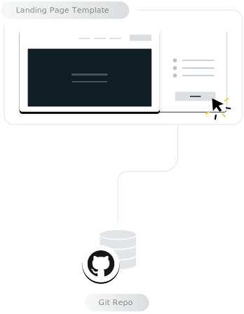
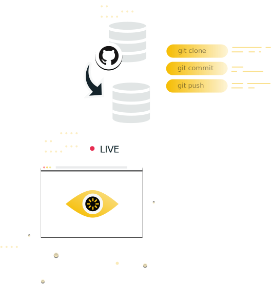

{{> head/head title='Landing Page Template' }}

<div class='home-page'>

  <div class='home-page-hero'>

    <div class='home-page-hero__wrapper'>
      <div class='home-page-hero__content'>
        <h1 class='home-page-hero__heading'>Welcome to your new landing pages!</h1>

        <div class='home-page-hero__copy'>

          <p>This is a brand new static website created just for you. It’s
          deployed to <a href='https://netlify.com'
          target='_blank'>Netlify</a>, served directly from a CDN, and
          already configured with continuous deployment. The site comes with
          two landing pages, which you can check out below:</p>

        </div>

        <div class='home-page__buttons'>
          <a href='/landing-page-a'
             class='home-page__button'>Landing Page A</a>
          <a href='/landing-page-b'
             class='home-page__button'>Landing Page B</a>
        </div>

      </div>

      

    </div>
  </div>


  <div class='home-page-next'>

    <div class='home-page-next__wrapper'>
      <div class='home-page-next__content'>
        <h1 class='home-page-next__heading'>Next Steps</h1>

        <div class='home-page-next__copy'>

          <p>If you provided a GitHub username when you generated this site,
          you’ve been added as a collaborator to its underlying repository.
          Since continuous deployment is already enabled, editing this website
          is as easy as pushing a commit to that GitHub repository. You can
          also explore settings in the Netlify admin panel for this
          website.</p>

        </div>

        <div class='home-page__buttons'>
          <a href='https://github.com/netlify-demo/unkempt-grade-48'
             target='_blank'
             class='home-page__button home-page__button--cta'>Visit GitHub Repo</a>
          <a href='https://app.netlify.com/sites/unkempt-grade-48/overview'
             target='_blank'
             class='home-page__button '>Visit Netlify Admin</a>
        </div>

      </div>

      

    </div>
  </div>

</div>

{{> foot/foot }}

